The horizontal line is labelled ‘X' and is called the x-axis. The vertical line is labelled ‘Y' and is called y-axis. The point of intersection of the two axis O is the origin. We mark a number scale with the zero point at the origin on each of the axis. This set of axis forms a co-ordinate system. With the help of co-ordinate geometry we will discuss here the properties of different types of ?gures and its related formulas. Which is listed below.
| S.N | Name | Properties |
|---|---|---|
| 1 | Distance between two points | The distance between two points \( A (x_1, \ y_1) \) and \( B (x_2, \ y_2)
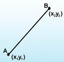
d = \sqrt{(x_1 - x_2)^2 + (y_1 - y_2)^2} \)
|
| 2 | Midpoint | The coordinate of the mid point \( M_{(x, \ y)} \) of the line segment joining the two points \( A (x_1, \ y_1) \) and \( B (x_2, \ y_2) \)
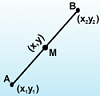
\( M_{(x, \ y)} = \left( \frac{x_1 + x_2}{2}, \ \frac{y_1 + y_2}{2} \right) \)
|
| 3 | Section |
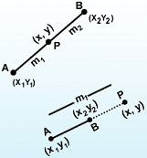
|
| 4 |
|
|
| 5 | Straight Line | A staright line is a curve such that every point on the line segment joining any two points on it lies on it.
general equation of line ax + by + c = 0 |
| 6 | Slope of Line | A line when co-ordinates of any two points on the line are given
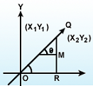
Formula:slope of line \( m = tan \ \theta = \left( \frac{y_2 - y_1}{x_2 - x_1} \right) \)
equation of line \( (y - y_1) = m(x - x_1) \) |
| 7 | Horizontal and vertical line |
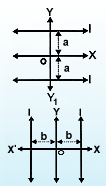
|
| 8 | slope intercept from of line | A line l with slope m cuts the y axis is at a distance C from the origin
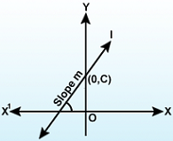
Formula:line parallel to X axis then y = a or y = -a line parallel to y axis then x = b or x = -b |
| 9 | intercept form of line | A line l makes intercepts a and b in x axis and y axis at the point (a, 0) and (0, b)
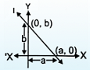
Formula:Equation of the line \( \frac{x}{a} + \frac{y}{b} = 1 \)
|
| 10 | Angle between two lines | If two lines intersect then angle between two lines inclined of their slope
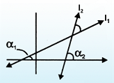
Formula:
\( \begin{align} m_1 = tan \ \alpha_1 \\\\[3pt]
m_2 = tan \ \alpha_2 \\\\[3pt]
tan \ \theta = \frac{m_2 - m_1}{1 + m_1 \ m_2} \end{align} \)
|
| 11 | Conditions for parallel | If two lines are parallel then their inclination are equal
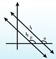
Formula:
\( \begin{align} m_1 = m_2 \\\\[3pt]
tan \ \alpha = tan \ \beta \\\\[3pt]
l_1 = a_1 x + b_1 y + c_1 = 0 \\\\[3pt]
l_2 = tan \ \alpha \ x + b_2 \ y + c_2 = 0 \\\\[3pt]
for \ || \\\\[3pt]
\frac{a_1}{a_2} = \frac{a_2}{b_2} \end{align} \)
|
| 12 | Conditions for perpendicular | If two line are perpendicular to each other if and only if their slopes are negative reciprocal of each other
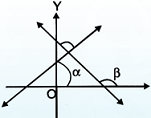
Formula:
\( \begin{align} m_1 = \frac{-1}{m_2} \ or \ m_1 \ m_2 = -1 \\\\[3pt]
a_1 \ a_2 = b_1 \ b_2 \end{align} \)
|
| 13 | length of perpendicular distance a point from a line | The length of perpendicular drawn from a given drawn from a given point \( (x_1, \ y_1) \) to a line ax + by + c = 0
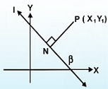
Formula:
\( PN = \frac{|ax_1 + by_1 + c|}{ \sqrt{a^2 + b^2}} \)
|
| 14 | Distance from origin | The length of perpendicular drawn from the origin to the line ax + by + c = 0 is given by
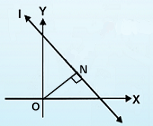
Formula:
\( ON = \frac{|c|}{ \sqrt{a^2 + b^2}} \)
|
| 15 | Distance between two parallel lines: | Two lines are parallel, the distance between them will always be the same
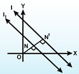
Formula:
\( NN' = \frac{|c_1 - c_2|}{ \sqrt{a^2 + b^2}} \)
|
| 16 | Area of Triangle | The cordinates of vertices of triangle ABC are \( (x_1, \ y_1), \ (x_2, \ y_2) \) and \( (x_3, \ y_3) \) repectively then the area of the triangle Formula: \( \triangle = \frac{1}{2} \left[x_1 (y_2 - y_3) + x_2(y_3 - y_1) + x_3(y_1 - y_2) \right] \) |